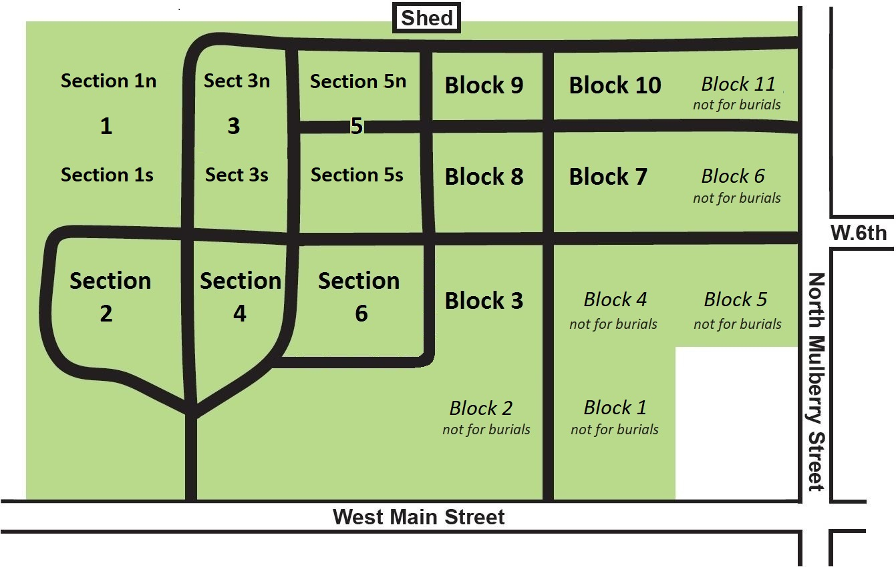

Map and Layout

The "Old" Cemetery (Western half, pre-1970) - Sections 1-6
Each lot has a unique ID, thus the section number is unneeded to identify it. Most lot IDs are numbered 1 to 1862, but their arrangement is confusing since new IDs were added at each expansion of the cemetery. Six grassy walkways, lettered A thru F, were converted to burial lots and numbered separately with the walkway letter as a prefix, such as lot A4 or lot F13. Because sections are large some maps informally subdivided them for clarity. One example is 1N & 1S for the north and south parts of Section 1. An earlier example was 1A, 1B, 1C & 1D for northmost to southmost subsections of Section 1.
The "New" Cemetery (Eastern half, post-1970) - Blocks 1-11
Each lot has a number that is not unique, starting with lot 1 in each block, thus both a block and lot number are needed to identify it. For example, B8 L10 identifies lot 10 within block 8. There is a less confusing pattern of numbering in the new cemetery, however it may be unfamiliar to most people because it follows a standard pattern used by surveyors. As with the old cemetery, there are several grassy walkways (C, G, and E) that were converted to lots and these lots have unique IDs over the entire cemetery so the block number is not needed, such as lots C45, E30, and G1.
Plots (or Spaces) within a Lot
Each lot has 2, 3, or 4 spaces depending on the lot's size. Spaces are numbered from south to north, starting with 1 to however many spaces are in the lot. One space can be used for one traditional burial or four cremains burials. One must own adjacent spaces if installing a larger tombstone in order to insure that the stone's foundation is at least 3 inches from the neighboring borders.
Note: We do not use the term "section" in the new cemetery or the term "block" in the old